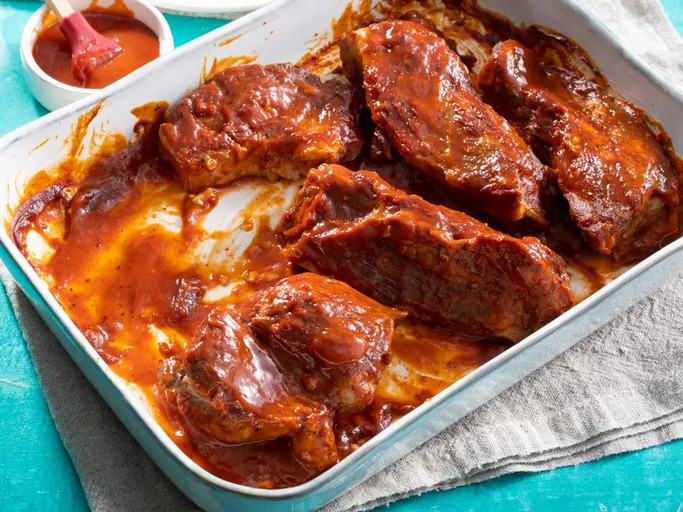

Simble BBQ Ribs

Description
Barbecue ribs don’t have to be complicated to be incredible, and this recipe proves it. These ribs are fall-off-the-bone tender with a smoky, caramelized glaze that’s bursting with bold, tangy flavor. With just a handful of ingredients and some patience while they cook low and slow, you’ll end up with a crowd-pleasing dish that feels like it came straight off a grill master’s smoker. Perfect for summer cookouts or a cozy family dinner, these ribs are proof that simplicity and great taste go hand in hand.
Ingredients
- 2 ½ pounds country-style pork ribs
- 2 tablespoons kosher salt
- 1 tablespoon garlic powder
- 1 teaspoon ground black pepper
- 1 cup barbeque sauce
Steps
- Gather all ingredients.
- Place ribs in a large pot and cover with water. Stir in kosher salt, garlic powder, and pepper, and bring water to a boil over medium heat. Continue to boil until ribs are tender, 40 to 45 minutes.
- While the ribs are boiling, preheat the oven to 325 degrees F (165 degrees C).
- Remove ribs from the pot, and place them in a 9x13-inch baking dish. Pour barbeque sauce over ribs. Cover the baking dish with aluminum foil.
- Bake in the preheated oven until the internal temperature of the pork has reached 160 degrees F (70 degrees C), 1 to 1 1/2 hours.
- Serve hot and enjoy!